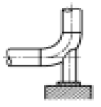
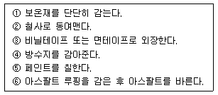
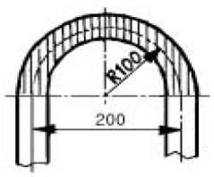
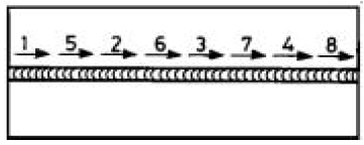
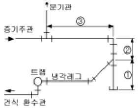
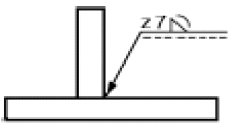
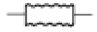
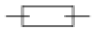
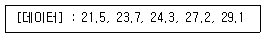

배관기능장 (2005-07-17 기출문제)
1과목: 임의구분
1. 압축공기 배관에서 공기 탱크를 설치하는 목적과 가장 관계가 적은 것은?
- 맥동 완화
- 압축공기의 저장
- 드레인 분리
- 공기 냉각
(정답률: 70%)

2. 다음 중 배수관의 트랩 목적으로 가장 적합한 것은?
- 배수량의 조정
- 배수관 내의 소음 제거
- 배수관 내의 누수 방지
- 유해가스의 실내 침입 방지
(정답률: 87%)
3. 보일러의 응축수 회수기 및 배관에 관한 설명으로 틀린 것은?
- 회수기 본체는 반드시 수평으로 설치한다.
- 압력계는 사이폰관에 물을 주입한 후 설치한다.
- 집수탱크는 본체 상부보다 낮게 설치한다.
- 집수탱크와 보조탱크의 중간 흡입관과 응축수 송출구에는 체크밸브를 설치한다.
(정답률: 65%)
4. 온수 난방의 장점 설명 중 잘못된 것은?
- 유량을 제어하여 방열량을 조절할 수 있다.
- 온수 보일러는 증기 보일러보다 취급이 용이하다.
- 증기 트랩을 사용하지 않아서 고장이 적다.
- 예열 시간이 짧아서 단시간에 사용하기 편리하다.
(정답률: 82%)
5. 보일러의 압력이나 온도를 일정하게 유지하는 압력제어, 온도제어와 같이 목표값이 시간에 관계없이 항상 일정한 값을 가지는 자동제어는 다음 중 어느 것인가?
- 시퀀스제어
- 추치제어
- 수동제어
- 정치제어
(정답률: 75%)
6. 난방시설에서 전열에 의한 손실열량이 10000 kcal/h 이고, 환기손실열량이 2700 kcal/h 인 곳에 증기난방을 할 경우 소요되는 주철제 방열기는 몇 절이 필요한가? (단, 방열기 1절의 방열 표면적은 0.28 m2 이고, 방열량은 650 kcal/m2∙h 이다.)
- 20절
- 35절
- 50절
- 70절
(정답률: 79%)
7. 온수 보일러 주위 배관 시공에 관한 내용이 틀린 것은?
- 순환펌프는 온수의 온도가 낮은 곳에 설치한다.
- 중력순환식의 경우 보일러 입구나 출구쪽에 팽창관을 설치한다.
- 강제순환식에서는 되도록 순환펌프 가까이 팽창관을 설치한다.
- 펌프의 출구측에 충분히 압력을 줄 수 없는 곳에 팽창관을 설치한다.
(정답률: 65%)
8. 자동화시스템에서 입력신호를 받아 중앙처리 장치를 거쳐 작업요소에 전달되어지는 프로그램장치, 프로그램 메모리를 포함하는 자동화의 5대 요소 중 하나인 것은?
- 센서(sensor)
- 네트워크(network)
- 프로세서(processor)
- 스프트웨어(software)
(정답률: 67%)
9. 그림과 같이 배관에 직접 접합하는 배관 지지대로서 주로 배관의 수평부나 곡관부에 사용되는 지지 장치 명칭은?

- 파이프 슈(pipe shoe)
- 앵커(anchor)
- 리지드 서포트(rigid support)
- 콘스탄트 행거(Constant hanger)
(정답률: 87%)
10. 급수펌프 설치시 캐비테이션(cavitation)발생 방지법에 대한 설명으로 틀린 것은?
- 흡입 관경을 크게 하고 길이를 짧게 한다.
- 단흡입을 양흡입으로 한다.
- 굴곡부를 최소로 줄인다.
- 회전수를 빠르게 한다.
(정답률: 78%)
11. 백색 분말이며, 다른 약품에 비해 취급이 간단하며 칼슘, 마그네슘등을 용해하는 능력이 뛰어난 화학세정용 약제인산은?
- 염산
- 불산
- 구론산
- 설파민산
(정답률: 90%)
12. 다음 급수설비 배관에서 급수 배관의 방로(防露) 피복을 하지 않아도 좋은 곳은?
- 땅 속과 콘크리이트 바닥 속의 배관
- 옥내 노출 배관
- 욕탕, 주방 등 습기가 많은 곳의 배관
- 목조벽 내, 천정 내, 또는 암거 속의 배관
(정답률: 78%)
13. 배관계의 지지 장치 설치시 유의해야 할 사항 설명으로 틀린 것은?
- 가급적 건물 등의 기존 보를 이용한다.
- 집중 하중이 걸리는 곳에 지지점을 정한다.
- 밸브나 수직관 근처를 가급적 피한다.
- 과대 응력의 발생이나 드레인(drain) 배출에 지장이 없게 한다.
(정답률: 77%)
14. 냉동 배관의 보온 공사를 보기와 같이 6가지로 분류할 때 시공 순서로 다음 중 가장 적합한 것은?

- ③ → ④ → ⑥ → ① → ⑤ → ②
- ⑥ → ① → ② → ④ → ③ → ⑤
- ⑥ → ④ → ③ → ⑤ → ① → ②
- ⑥ → ④ → ⑤ → ① → ② → ③
(정답률: 66%)
15. 다음 중 통기관을 설치하는 가장 중요한 이유인 것은?
- 실내의 환기를 위하여
- 배수량의 조절을 위하여
- 유독가스를 보관하기 위하여
- 트랩 내 봉수를 보호하기 위하여
(정답률: 86%)
16. 다음은 동관에 대한 설명이다. 틀린 것은?
- 전기 및 열전도율이 좋다.
- 산성에는 내식성이 강하고 알카리성에는 심하게 침식된다.
- 기계적 가공이 용이하며 동파되지 않는다.
- 전연성이 풍부하고 마찰저항이 적다.
(정답률: 84%)
17. 고온 고압용 관 재료로서 갖추어야할 조건 중 틀린 것은?
- 유체에 대한 내식성이 클것
- 고온도에서도 기계적 강도를 유지하고 저온에서도 재질의 여림화를 일으키지 않을 것
- 가공이 용이하고 값이 쌀것
- 크리이프 강도가 작을 것
(정답률: 86%)
18. 다음 중 합성 수지 도료의 종류가 아닌 것은?
- 실리콘 수지계
- 요소 멜라민계
- 염화 비닐계
- 광명단계
(정답률: 68%)
19. 알루미늄관에 대한 설명 중 틀린 것은?
- 열교환기의 배관용으로 쓰인다.
- 고압탱크의 배관용으로 적합하다.
- 내식성이 비교적 우수하다.
- 가공이 비교적 쉽다.
(정답률: 77%)
20. 배관재료 중 스트레이너(Straniner)를 설명한 것으로 틀린 것은?
- 밸브나 기기앞에 설치한다.
- 호칭지름 50A이하는 일반적으로 나사 이음형이다.
- U형은 Y형에 비해 저항은 크나 보수점검에 편리하다.
- V형은 유체가 직각으로 흐르므로 유체저항이 가장 크다.
(정답률: 87%)
2과목: 임의구분
21. 고온 고압용 패킹으로 양질의 석면섬유와 순수한 흑연을 균일하게 혼합하고, 소량의 내열성 바인더로 굳힌 것을 심으로 하여 사용조건에 따라 스테인레스강선이나 인코넬선을 넣어 석면사로 편조한 패킹은?
- 합성수지패킹
- 테프론 편조 패킹
- 일산화연 패킹
- 플라스틱 코어형 메탈패킹
(정답률: 75%)
22. 배관 내의 불순물을 제거하는 것을 주 목적으로 사용하는 배관 부속은?
- 스트레이너
- 체크 밸브
- 글랜드 패킹
- 레스트레인트
(정답률: 96%)
23. 다음 밸브 중 유체 흐름방향의 표시가 없는 밸브는?
- 글루우브 밸브
- 니들 밸브
- 슬루스 밸브
- 체크 밸브
(정답률: 59%)
24. 다음 중 요리장의 개숫물 속의 찌꺼기를 거르는 경우 가장 적합한 것은?
- 드럼 트랩
- 그리스 트랩
- 리프트 트랩
- 플러시 트랩
(정답률: 56%)
25. 관의 팽창과 충격으로 부터 보호해 주기 위해 긴 테이퍼의 목(hub)이 있으며 20㎏/cm2이상의 고온, 고압 배관에 사용하는 플랜지는?
- 나사 플랜지(Thread flange)
- 차입 용접 플랜지(sock weld flange)
- 스립-온 플랜지(Slip-on flange)
- 웰드 넥크 플렌지(Weld neck flange)
(정답률: 77%)
26. 안전 색채 중 적색 표시에 해당하지 않는 것은?
- 위험
- 정지
- 통로
- 화재 경보함
(정답률: 94%)
27. 메커니컬 이음에 비교한 빅토릭 이음의 특징 설명으로 올바른 것은?
- 접합 작업이 간단하다.
- 수중에서 용이하게 작업할 수 있다.
- 가요성이 풍부하여 다소 굴곡하여도 누수하지 않는다.
- 관내의 압력이 증가하면 고무링이 관벽에 밀착되어 누수가 방지된다.
(정답률: 74%)
28. 다음 중 일반적인 폴리 에틸렌관의 접합법이 아닌 것은?
- 나사 접합
- 인서트 접합
- 소켓 접합
- 맞대기 용착 접합
(정답률: 43%)
29. 증기에 성질에 관한 다음 설명 중 올바른 것은?
- 온도가 낮을수록 증발잠열이 크다.
- 건도 × =1일 때 포화수라고 한다.
- 과열도가 낮을수록 이상 기체의 상태 방정식을 가장 잘 만족 시킨다.
- 엔탈피는 순수한 물 100℃를 기준으로 정해진다.
(정답률: 53%)
30. 동관의 압축이음(flare joint)에 대한 설명으로 틀린 것은?
- 관 지름 20mm 이하의 동관을 이음할 때 사용한다.
- 기계의 점검, 보수 기타 분해할 필요가 있는 곳에 사용한다.
- 한쪽 동관 끝을 나팔형으로 넓히고 슬리브 너트로 이음쇠에 고정한 후 풀림을 방지하기 위하여 더블너트를 체결한다.
- 강관에서의 플랜지 이음과 같은 플랜지를 사용한다.
(정답률: 71%)
31. 난방코일을 설치하기 위해 수동 벤딩 롤러를 사용하여 20A 강관을 그림과 같이 100mm의 반경으로 180°구부리고자 할 때 빗금친 굽힘부의 길이는 약 몇 mm 정도가 소요되는가?

- 79
- 157.5
- 315
- 630
(정답률: 71%)
32. 냉난방 설비의 전열(傳熱)과 관련된 설명 중 틀린 것은?
- 일반적으로 전기 전도도가 좋은 물체가 열의 전도도 (傳導度)가 높다.
- 복사열량은 피사체에 따라 흡수 또는 반사된다.
- 동일한 기체에서도 온도차이에 따라 비중차이가 생기며 기체의 일부에 열을 가하면 비중차이에 의해 자연대류가 발생하며 이 때 열방사 현상이 발생한다.
- 방열기의 방열량이 방열기 설치조건 등에 따라 다른 것은 전달조건에 따라 열전달율이 다르기 때문이다.
(정답률: 58%)
33. 구리관의 끝부분을 정확한 지름의 원형으로 만들 때 사용하는 주된 공구는?
- 가열기(heater)
- 커터(cutter)
- 사이징 툴
- 익스팬더(expander)
(정답률: 88%)
34. 칼라속에 2개의 고무링을 넣고 이음하는 방식으로 일명 고무 가스켓 이음이라고도 하며 75~500mm의 지름이 작은 석면시멘트관에 사용되는 이음방식인 것은?
- 심플렉스이음
- 콤포이음
- 노 허브 신축이음
- 철근 콘크리트 이음
(정답률: 81%)
35. 강관의 전기용접 작업시 안전 수칙으로 올바른 것은?
- 용접선 코드는 되도록 길게하여 사용한다.
- 접지선을 사용하고 접촉이 확실하게 접촉시킨다.
- 홀더가 과열되었을 때는 물속에 넣어 냉각시킨다.
- 용접 작업은 용접용 앞치마 만 착용하면 된다.
(정답률: 77%)
36. 수공구 사용에 대한 안전 유의사항 중 잘못된 것은?
- 사용 전에 모든 부분에 기름을 칠하고 사용할 것
- 결함이 있는 것은 절대로 사용하지 말 것
- 공구의 성능을 충분히 알고 사용할 것
- 사용 후에는 반드시 점검하고 고장난 부분은 즉시 수리 의뢰할 것
(정답률: 97%)
37. 16℃의 물 180kg에 85℃의 열수 몇 kg을 혼합하면 42℃의 온수를 얻을 수 있는가?
- 약 243kg
- 약 330kg
- 약 270kg
- 약 109kg
(정답률: 39%)
38. 안지름이 20㎝인 수평관에 물이 가득차 있다. 물이 흐르지 않을 때의 압력은 4㎏/cm2이고, 물이 흐를 때의 압력은 3.4㎏/cm2이다. 물이 흐를 때의 유량(m3/sec)은?
- 0.16
- 0.22
- 0.28
- 0.34
(정답률: 34%)
39. 보기 그림과 같은 순서로 용접하는 용착법은 무엇인가?

- 빌드업법
- 단속용접법
- 스킨법
- 케스케이드법
(정답률: 67%)
40. 이음하려고 하는 금속을 용융시키지 않고 모재보다 용융점이 낮은 용가재를 금속 사이에 용융 첨가하여 용접접합하는 방법은?
- 가스압접
- 경납땜
- 마찰용접
- 냉간압접
(정답률: 71%)
3과목: 임의구분
41. 용접법의 분류에서 압접에 속하지 않는 것은?
- 저항용접
- 유도가열용접
- 초음파용접
- 스터드용접
(정답률: 51%)
42. 정격2차 전류 200A, 정격 사용률이 50% 인 아크 용접기로 150A의 용접전류를 사용시 허용 사용률은 약 몇 %인가?
- 53
- 65
- 71
- 89
(정답률: 52%)
43. AW-300인 교류아크 용접기의 정격 2차 전류는 얼마인가?
- 100[A]
- 220[A]
- 150[A]
- 300[A]
(정답률: 87%)
44. 다음 중 용접부의 잔류 응력 완화법이 아닌 것은?
- 기계적 응력 완화법
- 저온 응력 완화법
- 침탄 응력 완화법
- 노내 풀림 완화법
(정답률: 54%)
45. 보기와 같은 관말 트랩장치의 위치별 치수로 다음 중 가장 적합한 것은?

- ① 150 ㎜ 이상, ② 100 ㎜ 이상, ③ 1200 ㎜ 이상
- ① 100 ㎜ 이상, ② 150 ㎜ 이상, ③ 250 ㎜ 이상
- ① 100 ㎜ 이상, ② 250 ㎜ 이상, ③ 200 ㎜ 이상
- ① 100 ㎜ 이상, ② 100 ㎜ 이상, ③ 100 ㎜ 이상
(정답률: 75%)
46. 배관에 식별색, 기호 그 밖의 표시를 함으로 안전을 도모하고 관계통의 취급을 용이하게 하여 배관의 보수 관리를 능률적으로 한다. 다음 식별색 중 기름을 나타내는 식별색은?
- 흰색
- 연한 노랑
- 파랑
- 어두운 주황
(정답률: 92%)
47. 일반적으로 입체도와 같은 등각 투영법으로 그리고 스푸울도(spool drawing)라고도 하는 것은?
- 배치도
- 계통도
- P.I.D
- 부분 배관도
(정답률: 72%)
48. 배관의 간략도시방법에서 배수계의 끝부분 장치에서 악취 방지장치 및 콕이 붙은 배수구를 평면도에 도시하는 기호인 것은?
(정답률: 74%)
49. 보기와 같은 필렛용접기호의 설명으로 올바른 것은?

- 용접부의 표면이 평탄하다.
- 용접부의 표면이 오목하다.
- 목 길이 7mm로 용접부한다.
- 목 두께 7mm로 용접부한다.
(정답률: 70%)
50. 다음 중 슬리이브형 신축 조인트를 표시한 것은?


(정답률: 81%)
51. 계장용 도시기호에서 "FIC"는 무엇인가?
- 유량 지시 조절
- 유량 경보 조절
- 유량 조절 경보
- 유량 경보 지시
(정답률: 76%)
52. 다음 유체의 종류 기호 연결 중 잘못된 것은?
- 기름 - 0
- 증기 - W
- 가스 - G
- 공기 - A
(정답률: 93%)
53. 배관도면에서 각 장치와 배관을 번호에 부여되면 배관라인의 성격과 위치를 명확히 구별하고 재료의 집계 등에 정확을 기할 수 있게 하기 위하여 작성하는 것은?
- 프로세스(process) P & I.D
- 유틸리티(utility) P & I.D
- 라인 인덱스(line index)
- 스푸울도(spool drawing)
(정답률: 72%)
54. 배관도에서 관 높이 표시에 대한 설명으로 올바른 것은?
- TOP : 보의 윗면을 이용해 관 높이를 표시할 때
- BOP : 관 내경의 아랫면을 기준으로 높이를 정할 때
- EL : 기준면에서 관의 중심까지 높이를 나타낼 때
- GL : 1층 바닥면을 기준으로 한 높이를 표시할 때
(정답률: 63%)
55. 다음 중 계량치 관리도는 어느 것인가?
- R 관리도
- nP 관리도
- C 관리도
- U 관리도
(정답률: 69%)
56. 다음 데이터로부터 통계량을 계산한 것 중 틀린 것은?

- 중앙값(Me) = 24.3
- 제곱합(S) = 7.59
- 시료분산(s2) = 8.988
- 범위(R) = 7.6
(정답률: 76%)
57. 생산보전(PM:Productive Maintenance)의 내용에 속하지 않는 것은?
- 사후보전
- 안전보전
- 예방보전
- 개량보전
(정답률: 69%)
58. 여력을 나타내는 식으로 가장 올바른 것은?
- 여력 = 1일 실동시간 × 1개월 실동시간 × 가동대수
- 여력 = (능력 - 부하) ⒡ 1/100
- 여력 = 능력 - 부하/능력 ⒡ 100
- 여력 = 능력 - 부하/부하 ⒡ 100
(정답률: 71%)
59. 다음 중 로트별 검사에 대한 AQL 지표형 샘플링검사 방식은 어느 것인가?
- KS A ISO 2859-0
- KS A ISO 2859-1
- KS A ISO 2859-2
- KS A ISO 2859-3
(정답률: 66%)
60. 다음 중에서 작업자에 대한 심리적 영향을 가장 많이 주는 작업측정의 기법은?
- PTS법
- 워크 샘플링법
- WF법
- 스톱 워치법
(정답률: 63%)